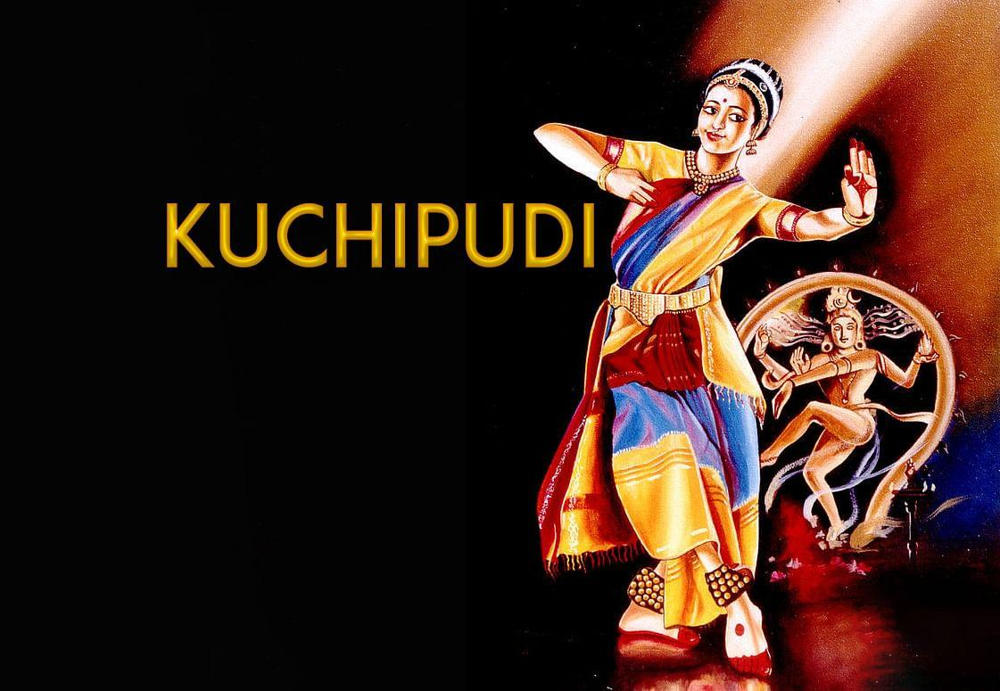
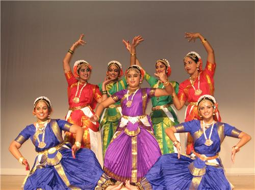

Andhra Pradesh, a state located on the southeastern coast of India, is known for its rich cultural heritage that spans thousands of years. The culture of Andhra Pradesh is a blend of various traditions, customs, and practices influenced by its history, geography, and the diverse communities residing in the region.
Historical Influences
The state's cultural landscape has been shaped by various dynasties, including the Satavahanas, Ikshvakus, Pallavas, Chalukyas, and the Vijayanagara Empire. Each of these dynasties has left an indelible mark on the region’s art, architecture, language, and traditions. The influence of Buddhism and Jainism, particularly during the Satavahana and Ikshvaku periods, is evident in the numerous stupas and rock-cut caves found in the region.
Language and Literature
Telugu, the official language of Andhra Pradesh, is often referred to as the "Italian of the East" due to its melodic and rhythmic quality. The state has a rich literary tradition, with classical poets like Nannaya, Tikkana, and Yerrapragada contributing to Telugu literature. The works of modern poets and writers, such as Sri Sri, Viswanatha Satyanarayana, and C. Narayana Reddy, have further enriched the literary heritage.
Performing Arts
Andhra Pradesh is renowned for its classical dance form, Kuchipudi, which originated in the Kuchipudi village. This dance form combines fast rhythms, fluid movements, and expressive gestures to tell stories from Hindu epics. The state is also known for its vibrant folk dances, such as Veeranatyam, Butta Bommalu, Tappeta Gullu, and Lambadi, which are performed during festivals and other celebrations.
Music
Carnatic music, a classical music tradition, has a strong presence in Andhra Pradesh. The state has produced many famous musicians and composers, such as Annamacharya, Thyagaraja, and Syama Sastri, whose contributions have significantly influenced the Carnatic music tradition.


Festivals and Traditions
Festivals play a vital role in the cultural fabric of Andhra Pradesh. Sankranti, Ugadi, Rama Navami, Krishna Janmashtami, Vinayaka Chavithi, and Deepavali are celebrated with great enthusiasm and fervor. These festivals are marked by elaborate rituals, traditional music and dance performances, and the preparation of special festive dishes.
Cuisine
The cuisine of Andhra Pradesh is known for its spicy and flavorful dishes. Rice is the staple food, often accompanied by a variety of chutneys, pickles, and curries. Popular dishes include Pesarattu, Pulihora, Gongura Pachadi, and the famous Andhra biryani. The use of tamarind, red chilies, and a variety of spices is characteristic of Andhra cuisine.
Art and Craft
The state is famous for its unique handicrafts, including Kalamkari (hand-painted or block-printed cotton textile), Pochampally sarees, and the intricate wood and stone carvings found in places like Lepakshi. Kondapalli toys, made from softwood and painted with vibrant colors, are another highlight of the region's craftsmanship.
In summary, the culture of Andhra Pradesh is a rich tapestry woven with historical influences, linguistic traditions, classical and folk arts, vibrant festivals, delectable cuisine, and exquisite handicrafts. This cultural diversity and heritage make Andhra Pradesh a fascinating region, showcasing the enduring legacy of its past while continually evolving with the times.